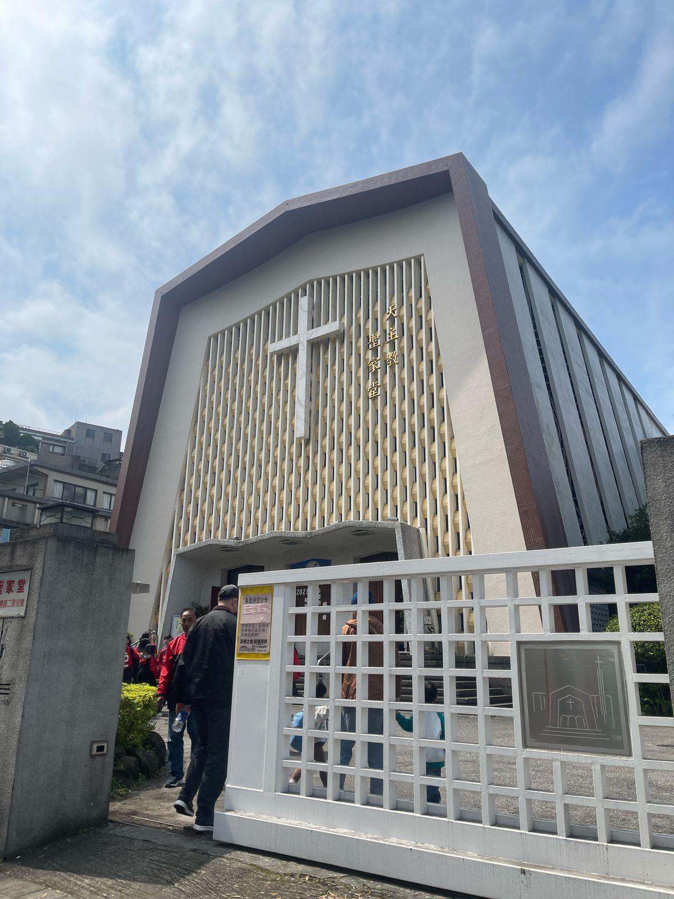
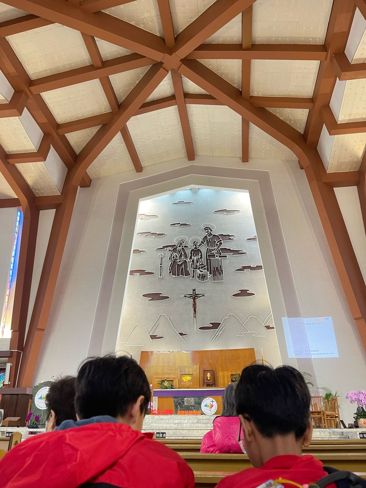

Angela Benedette Pranoto 8A / 02
Pertanyaan LKS Agama diambil dari kunjungan ke Holy Catholic Family Church. 1. Ceritakanlah sejarah yang ada di Gereja yang kamu kunjungi! Gereja ini didirikan pada tahun 1592 oleh dua imam asal Kanada dan seorang imam asal Italia. Awalnya, gereja terletak di Jalan Andong St. sebelum dipindahkan ke lokasi saat ini pada tahun 1964. Gereja ini memiliki 18 jendela kaca patri yang berusia lebih dari satu abad, dibuat oleh seniman Prancis terkenal, Leveque. 2. Perbedaan apa yang kamu temukan di Gereja yang kamu kunjungi dibandingkan dengan Gereja di Laurensius! Gereja Holy Family:
Gereja Santo Laurensius:
|
|
|  |  |